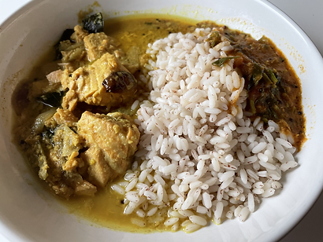
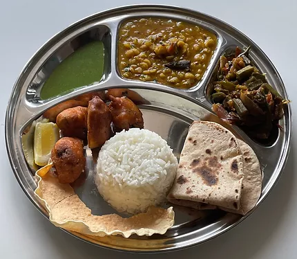

Hi, I'm Sruti (pronounced Sroo-Tea), and my pronouns are she/her.
As a User Experience Researcher, I have made products more efficient, inclusive, and, in some cases, life-saving! I developed an interest in accessibility while studying at the University of Maryland, Baltimore County. Initially intimidated by it, I quickly learned how straightforward and rewarding it could be and wanted to help others in tech (and everyone else in my life ;-)) understand it better. I honed my craft while working at UserWorks, Inc., in Silver Spring, Maryland, as a UX & Accessibility Specialist for three years. I am looking for new opportunities at the moment. My vision is to see accessibility be seamlessly integrated into every product's development process.
{%- for testimonial in site.data.testimonials -%}
{% include testimonial.html testimonial=testimonial %}
{% endfor %}
A lightbulb moment
Meeting Haben Girma in 2019 changed my perspective on Accessibility. I shifted my focus from disabilities to the barriers people with disabilities face.
A prized possesion
Whitney Quesenbery, author of "A Web for Everyone: Designing Accessible User Experiences," attended my talk on " The 7 colors of the accessibility rainbow" at DCUX'19 and gave me a signed copy of her book. Her message is a source of encouragement for me.
In my free time, I cook. A lot. It's my way of unwinding, experimenting, exploring cultures, showing love, and feeling closer to my family in India. Here are some pictures:

Kerala-style fish curry, Matta rice, and Rassam

North Indian vegetarian thali
Korean Sundubu-jjigae
Thai steamed fish
I also enjoy home improvement projects, satirical news shows, and reading. I'm currently reading "Three Thousand Stitches" by Sudha Murty.